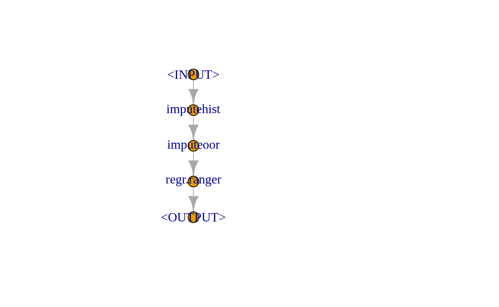
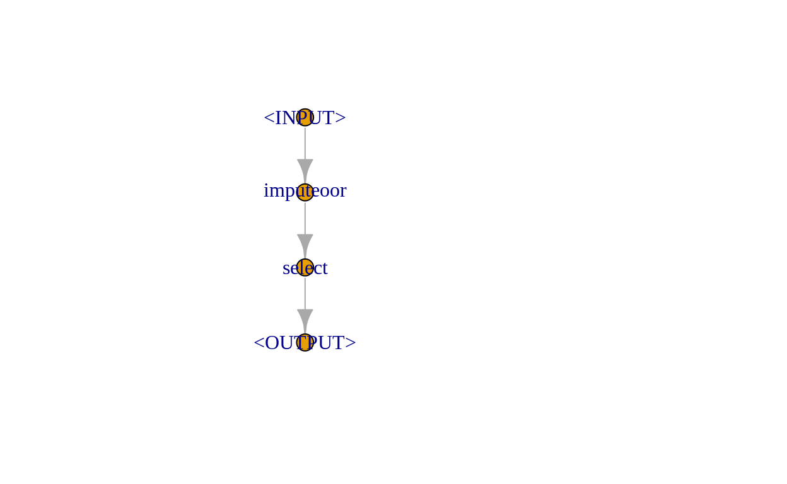

This use case shows how to easily work with datasets available via OpenML into an mlr3 workflow.
The following operations are illustrated:
- Creating tasks and learners
- Imputation for missing values
- Training and predicting
- Resampling / Cross-validation
Loading basic packages
# tasks, train, predict, resample, benchmark
library("mlr3")
# about a dozen reasonable learners
library("mlr3learners")
# Pipelines
library("mlr3pipelines")
# lots of measures for evaluation
library("mlr3measures")
# Retrieving the data
library("OpenML")
Retrieving the data from OpenML
We can use the OpenML package to retrieve data (and more) straight away. OpenML is is an inclusive movement to build an open, organized, online ecosystem for machine learning. Typically, you can retrieve the data with an id. The id can be found on OpenML. We choose the 41021as our oml_id. The related web page can be accessed here. This data set was uploaded by Joaquin Vanschoren.
oml_id = 41021
oml_dat = getOMLDataSet(data.id = oml_id)
The description indicates that the data set is associated with baseball or more precisely the story of Moneyball.
oml_dat
Data Set 'Moneyball' :: (Version = 2, OpenML ID = 41021)
Default Target Attribute: RSHowever, the description within the OpenML object is not very detailed. The previously referenced page however states the following:
In the early 2000s, Billy Beane and Paul DePodesta worked for the Oakland Athletics. During their work there, they disrupted the game of baseball. They didnt do it using a bat or glove, and they certainly didnt do it by throwing money at the issue; in fact, money was the issue. They didnt have enough of it, but they were still expected to keep up with teams that had more substantial endorsements. This is where Statistics came riding down the hillside on a white horse to save the day. This data set contains some of the information that was available to Beane and DePodesta in the early 2000s, and it can be used to better understand their methods.
This data set contains a set of variables that Beane and DePodesta emphasized in their work. They determined that statistics like on-base percentage (OBP) and slugging percentage (SLG) were very important when it came to scoring runs, however, they were largely undervalued by most scouts at the time. This translated to a gold mine for Beane and DePodesta. Since these players werent being looked at by other teams, they could recruit these players on a small budget. The variables are as follows:
- Team
- League
- Year
- Runs Scored (RS)
- Runs Allowed (RA)
- Wins (W)
- On-Base Percentage (OBP)
- Slugging Percentage (SLG)
- Batting Average (BA)
- Playoffs (binary)
- RankSeason
- RankPlayoffs
- Games Played (G)
- Opponent On-Base Percentage (OOBP)
- Opponent Slugging Percentage (OSLG)
While Beane and DePodesta defined most of these statistics and measures for individual players, this data set is on the team level.
These statistics seem very informative if you are into baseball. If baseball of rather obscure to you, simply take these features as given or give this article a quick read.
data = oml_dat$data
summary(data)
Team League Year RS RA
BAL : 47 AL:616 Min. :1962 Min. : 463.0 Min. : 472.0
BOS : 47 NL:616 1st Qu.:1977 1st Qu.: 652.0 1st Qu.: 649.8
CHC : 47 Median :1989 Median : 711.0 Median : 709.0
CHW : 47 Mean :1989 Mean : 715.1 Mean : 715.1
CIN : 47 3rd Qu.:2002 3rd Qu.: 775.0 3rd Qu.: 774.2
CLE : 47 Max. :2012 Max. :1009.0 Max. :1103.0
(Other):950
W OBP SLG BA Playoffs
Min. : 40.0 Min. :0.2770 Min. :0.3010 Min. :0.2140 0:988
1st Qu.: 73.0 1st Qu.:0.3170 1st Qu.:0.3750 1st Qu.:0.2510 1:244
Median : 81.0 Median :0.3260 Median :0.3960 Median :0.2600
Mean : 80.9 Mean :0.3263 Mean :0.3973 Mean :0.2593
3rd Qu.: 89.0 3rd Qu.:0.3370 3rd Qu.:0.4210 3rd Qu.:0.2680
Max. :116.0 Max. :0.3730 Max. :0.4910 Max. :0.2940
RankSeason RankPlayoffs G OOBP OSLG
2 : 53 1 : 47 162 :954 Min. :0.2940 Min. :0.3460
1 : 52 2 : 47 161 :139 1st Qu.:0.3210 1st Qu.:0.4010
3 : 44 3 : 80 163 : 93 Median :0.3310 Median :0.4190
4 : 44 4 : 68 160 : 23 Mean :0.3323 Mean :0.4197
5 : 21 5 : 2 159 : 10 3rd Qu.:0.3430 3rd Qu.:0.4380
(Other): 30 NA's:988 164 : 10 Max. :0.3840 Max. :0.4990
NA's :988 (Other): 3 NA's :812 NA's :812 The summary shows how this data we are dealing with looks like: Some data is missing, however, this has structural reasons. There are \(39\) teams with each maximally \(47\) years (\(1962\) - \(2012\)). For \(988\) cases the information on RankSeason and RankPlayoffs is missing. This is since these simply did not reach the playoffs and hence have no reported rank.
RankSeason RankPlayoffs
1 : 0 1 : 0
2 : 0 2 : 0
3 : 0 3 : 0
4 : 0 4 : 0
5 : 0 5 : 0
(Other): 0 NA's:988
NA's :988 On the other hand, OOBP and OSLG have \(812\) missing values. It seems as if these measures were not available before \(1998\).
Min. 1st Qu. Median Mean 3rd Qu. Max.
1962 1971 1980 1980 1989 1998 We seem to have a missing data problem. Typically, in this case, we have three options: They are:
Complete case analysis: Exclude all observation with missing values.
Complete feature analysis: Exclude all features with missing values.
Missing value imputation: Use a model to guess the missing values (based on the underlying distribution of the data.
Usually, missing value imputation is preferred over the first two. However, in machine learning, one can try out all options and see which performs best for the underlying problem. For now, we limit ourselves to a rather simple imputation technique, imputation by randomly sampling from the univariate distribution. Note that this does not take the multivariate distribution into account properly and that there are more elaborate approaches. We only aim to impute OOBP and OSLG. For the other missing (categorical) features, we simply add a new level which indicates that information is missing (i.e.all missing values belong to.
It is important to note that in this case here the vast majority of information on the features is missing. In this case, imputation is performed to not throw away the existing information of the features.
mlr3 has some solutions for that within the mlr3pipelines package. We start with an easy PipeOp which only performs numeric imputation.
imp_num = po("imputehist", param_vals = list(affect_columns = selector_type("numeric")))
Next, we append the second imputation job for factors.
imp_fct = po("imputeoor", param_vals = list(affect_columns = selector_type("factor")))
graph = imp_num %>>% imp_fct
graph$plot()

So far we only prepared the pipeline without actually modeling. Before we come to this step, we perform a last preprocessing step manually. Namely, we make G (games played) a numerical feature.
data$G = as.numeric(data$G)
Additionally, the row names (starting with \(0\)) are changed.
Creating tasks and learners
The fact that there is missing data does not affect the task definition. The task determines what is the problem to be solved by machine learning. We want to explain the Runs Scored (RS). RS is an important measure as a run is equivalent to a point scored in other sports. Naturally, the aim of a coach should be to maximise runs scored and minimise runs allowed. As runs scored and runs allowed are both legitimate targets we ignore the runs allowed here. The task is defined by:
# creates a `mlr3` task from scratch, from a data.frame
# 'target' names the column in the dataset we want to learn to predict
task = TaskRegr$new(id = "moneyball", backend = data, target = "RS")
task$missings()
RS BA G League OBP OOBP
0 0 0 0 0 812
OSLG Playoffs RA RankPlayoffs RankSeason SLG
812 0 0 988 988 0
Team W Year
0 0 0 The missings method indicates what we already knew: our missing values. Missing values are not always a problem. Some learners can deal with them pretty well. However, we want to use a random forest for our task.
# creates a learner
test_lrn = LearnerRegrRanger$new()
# displays the properties
test_lrn$properties
[1] "importance" "oob_error" "weights" Typically, in mlr3 the properties method would tell us whether missing values are a problem to this learner or not. As it is not listed here, the random forest cannot deal with missing values.
As we aim to use imputation beforehand, we incorporate it into the learner. Our selected learner is going to be a random forest from the ranger package. One can allow the embedding of the preprocessing (imputation) into a learner by creating new (method) PipeOpLearner (R6 class). This special learner can be put into a graph together with the imputer via the new method of the GraphLearner class.
# creates a normal learner however allows further embedding of PipeOp's.
polrn = PipeOpLearner$new(mlr_learners$get("regr.ranger"))
# sets number of trees to 1000, importance is for later
polrn$param_set$values = list(num.trees = 1000, importance = "permutation")
# the final learner is a graph consisting of the imputer and the normal learner.
lrn = GraphLearner$new(graph = graph %>>% polrn)
The final graph looks like the following:
plot(graph %>>% polrn)

Train and predict
To get a feeling of how our model performs we simply train the learner on a subset of the data and predict the hold-out data.
# defines the training and testing data; 95% is used for training
train_set = sample(task$nrow, 0.95 * task$nrow)
test_set = setdiff(seq_len(task$nrow), train_set)
# train learner on subset of task
lrn$train(task, row_ids = train_set)
# predict using held out observations
preds = lrn$predict(task, row_ids = test_set)
print(preds)
<PredictionRegr> for 62 observations:
row_id truth response
24 619 598.1560
63 613 675.8026
90 655 655.8345
---
1183 614 580.0988
1188 693 686.3181
1191 715 729.2207Viewing the predicted values it seems like the model predicts reasonable values that are fairly close to the truth.
Evaluation & Resampling
While the prediction indicated that the model is doing what it is supposed to, we want to have a more systematic understanding of the model performance. That means we want to know by how much our model is away from the truth on average. Cross-validation investigates this question. In mlr3 ten-fold cross-validation is constructed as follows:
We choose some of the performance measures provided by:
mlr_measures
<DictionaryMeasure> with 98 stored values
Keys: classif.acc, classif.auc, classif.bacc, classif.bbrier,
classif.ce, classif.costs, classif.dor, classif.fbeta, classif.fdr,
classif.fn, classif.fnr, classif.fomr, classif.fp, classif.fpr,
classif.logloss, classif.mbrier, classif.mcc, classif.npv,
classif.ppv, classif.prauc, classif.precision, classif.recall,
classif.sensitivity, classif.specificity, classif.tn, classif.tnr,
classif.tp, classif.tpr, debug, dens.logloss, oob_error, regr.bias,
regr.ktau, regr.mae, regr.mape, regr.maxae, regr.medae, regr.medse,
regr.mse, regr.msle, regr.pbias, regr.rae, regr.rmse, regr.rmsle,
regr.rrse, regr.rse, regr.rsq, regr.sae, regr.smape, regr.srho,
regr.sse, selected_features, surv.beggC, surv.brier,
surv.calib_alpha, surv.calib_beta, surv.chambless_auc,
surv.chamblessAUC, surv.cindex, surv.gonenC, surv.graf, surv.grafSE,
surv.harrellC, surv.hung_auc, surv.hungAUC, surv.intlogloss,
surv.intloglossSE, surv.logloss, surv.loglossSE, surv.mae,
surv.maeSE, surv.mse, surv.mseSE, surv.nagelk_r2, surv.nagelkR2,
surv.oquigley_r2, surv.oquigleyR2, surv.rmse, surv.rmseSE,
surv.schmid, surv.song_auc, surv.song_tnr, surv.song_tpr,
surv.songAUC, surv.songTNR, surv.songTPR, surv.uno_auc, surv.uno_tnr,
surv.uno_tpr, surv.unoAUC, surv.unoC, surv.unoTNR, surv.unoTPR,
surv.xu_r2, surv.xuR2, time_both, time_predict, time_trainWe choose the mean absolute error (regr.mae) and the mean squared error (regr.mse).
task task_id learner
1: <TaskRegr[42]> moneyball <GraphLearner[32]>
2: <TaskRegr[42]> moneyball <GraphLearner[32]>
3: <TaskRegr[42]> moneyball <GraphLearner[32]>
4: <TaskRegr[42]> moneyball <GraphLearner[32]>
5: <TaskRegr[42]> moneyball <GraphLearner[32]>
6: <TaskRegr[42]> moneyball <GraphLearner[32]>
7: <TaskRegr[42]> moneyball <GraphLearner[32]>
8: <TaskRegr[42]> moneyball <GraphLearner[32]>
9: <TaskRegr[42]> moneyball <GraphLearner[32]>
10: <TaskRegr[42]> moneyball <GraphLearner[32]>
learner_id resampling resampling_id iteration
1: imputehist.imputeoor.regr.ranger <ResamplingCV[19]> cv 1
2: imputehist.imputeoor.regr.ranger <ResamplingCV[19]> cv 2
3: imputehist.imputeoor.regr.ranger <ResamplingCV[19]> cv 3
4: imputehist.imputeoor.regr.ranger <ResamplingCV[19]> cv 4
5: imputehist.imputeoor.regr.ranger <ResamplingCV[19]> cv 5
6: imputehist.imputeoor.regr.ranger <ResamplingCV[19]> cv 6
7: imputehist.imputeoor.regr.ranger <ResamplingCV[19]> cv 7
8: imputehist.imputeoor.regr.ranger <ResamplingCV[19]> cv 8
9: imputehist.imputeoor.regr.ranger <ResamplingCV[19]> cv 9
10: imputehist.imputeoor.regr.ranger <ResamplingCV[19]> cv 10
prediction regr.mae regr.mse
1: <PredictionRegr[18]> 19.59415 619.0158
2: <PredictionRegr[18]> 18.26726 533.1473
3: <PredictionRegr[18]> 22.51755 792.7933
4: <PredictionRegr[18]> 19.83573 608.2372
5: <PredictionRegr[18]> 21.85814 785.5617
6: <PredictionRegr[18]> 18.59886 531.2656
7: <PredictionRegr[18]> 17.50763 495.5710
8: <PredictionRegr[18]> 18.05779 511.2827
9: <PredictionRegr[18]> 19.83747 725.6058
10: <PredictionRegr[18]> 18.28481 494.6057We can also compute now by how much our model was on average wrong when predicting the runs scored.
r$aggregate(msr("regr.mae"))
regr.mae
19.43594 That seems not too bad. Considering that on average approximately 715 runs per team per season have been scored.
mean(data$RS)
[1] 715.082Performance boost of imputation
To assess if imputation was beneficial, we can compare our current learner with a learner which ignores the missing features. Normally, one would set up a benchmark for this. However, we want to keep things short in this use case. Thus, we only set up the alternative learner (with identical hyperparameters) and compare the 10-fold-cross-validated mean absolute error.
As we are mostly interested in the numeric imputation we leave the remaining graph as it is.
imp_fct = po("imputeoor", param_vals = list(affect_columns = selector_type("factor")))
graph2 = as_graph(imp_fct)
Subsequently, we add the PipeOpSelect PipeOp to the pipeline.
feature_names = colnames(data)[!sapply(data, anyNA)]
feature_names = c(
feature_names[feature_names %in% task$feature_names],
"RankSeason", "RankPlayoffs")
na_select = po("select")
na_select$param_set$values$selector = selector_name(feature_names)
graph2 = graph2 %>>% na_select
graph2$plot()

Now we complete the learner and apply resampling as before.
lrn2 = GraphLearner$new(graph = graph2 %>>% polrn)
r2 = resample(task, lrn2, cv10)
r2$aggregate(msr("regr.mae"))
regr.mae
18.92482 Surprisingly, the performance seems to be approximately the same. That means that the imputed features seem not very helpful. We can use the variable.importance of the random forest.
sort(lrn$model$regr.ranger$model$variable.importance, decreasing = TRUE)
SLG OBP BA W RA Year
3435.643552 2485.771229 936.206663 715.235512 501.303163 269.429878
RankSeason RankPlayoffs Playoffs League OOBP OSLG
132.335915 106.292475 97.366197 35.753015 25.235380 25.087355
Team G
16.611604 9.464481 We see that according to this the left out OOBP and OSLG seem to have solely rudimentary explanatory power. This may be because there were simply too many instances or because the features are themselves not very powerful.
Conclusion
So, to sum up, what we have learned: We can access very cool data straight away with the OpenML package. (We are working on a better direct implementation into mlr3 at the moment.) We can even work with missing data very well in mlr3. Nevertheless, we discovered that sometimes imputation does not lead to the intended goals. We also learned how to use some PipeOps from the mlr3pipelines package.
But most importantly, we found a way to predict the runs scored of MLB teams.
If you want to know more, read the mlr3book and the documentation of the mentioned packages.